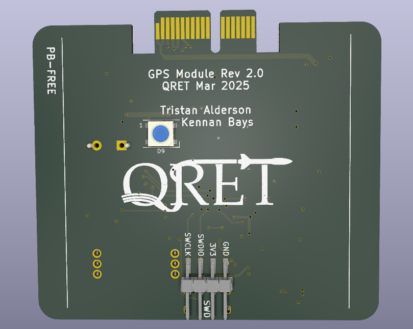
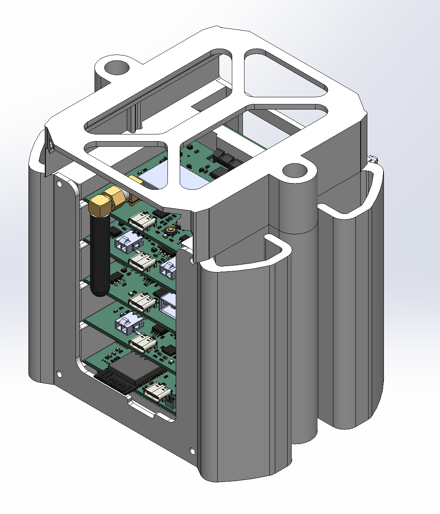
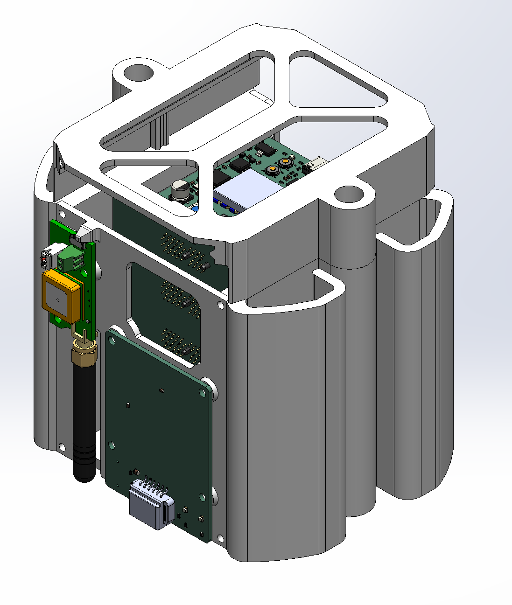

Engineering Skills



Hardware & PCB Design
Architecting custom PCB solutions for avionics and telemetry systems. Every board below was designed in KiCad — from schematic to gerbers to JLCPCB assembly.
Avionics Firmware & Protocols
Architecting the complete avionics network for the Queen's Rocket Engineering Team (QRET) 2026 hybrid rocket. Developed a custom application-layer CAN protocol with radio-forwarding for real-time ground station telemetry. Lead firmware development for STM32 and ESP32 controllers, focusing on real-time task scheduling and robust sensor aggregation.


Computer Vision & Control Systems
Built an automated rocket tracking system combining YOLOv8 computer vision with PID control to lock onto and follow a rocket through its entire flight arc. The system helped secure 2nd Place at the Launch Canada competition. Part of a 10-person launch team in the New Mexico desert, managing critical altimeter and GPS configurations.
FPGA & Embedded Firmware
Co-designing LiteLM — an offline, domain-specific LLM inference engine on a Xilinx Zynq UltraScale+ SoC. Accelerating tensor computation via custom FPGA logic with AXI4 DMA transfers. Also developed embedded systems at Evertz Microsystems, working with distributed control and real-time telemetry pipelines.